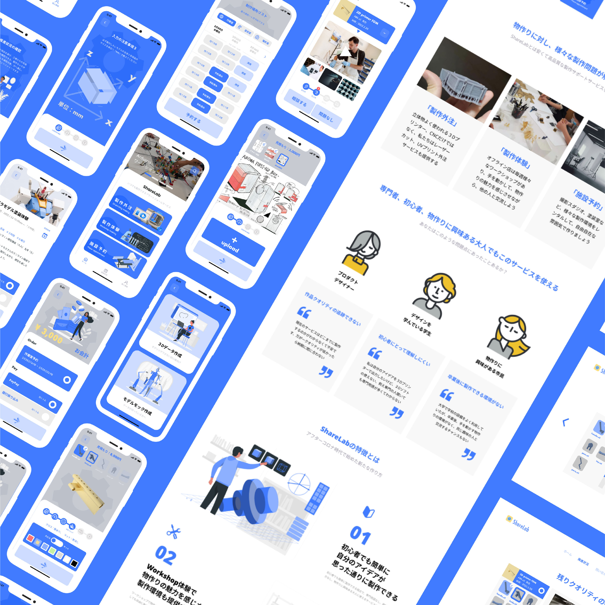
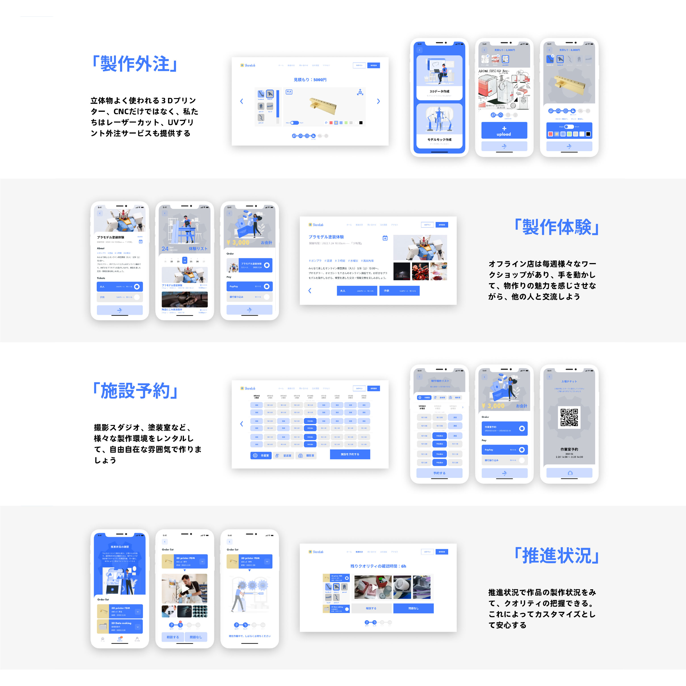
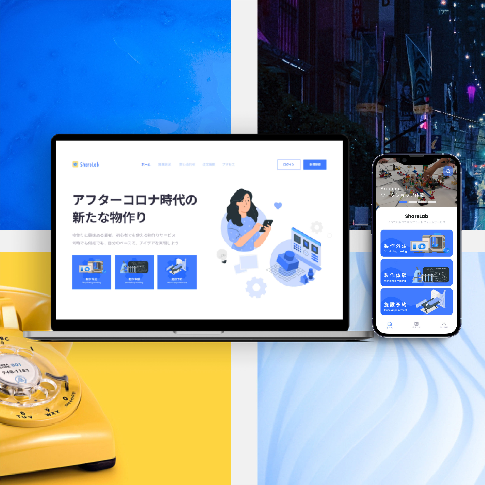
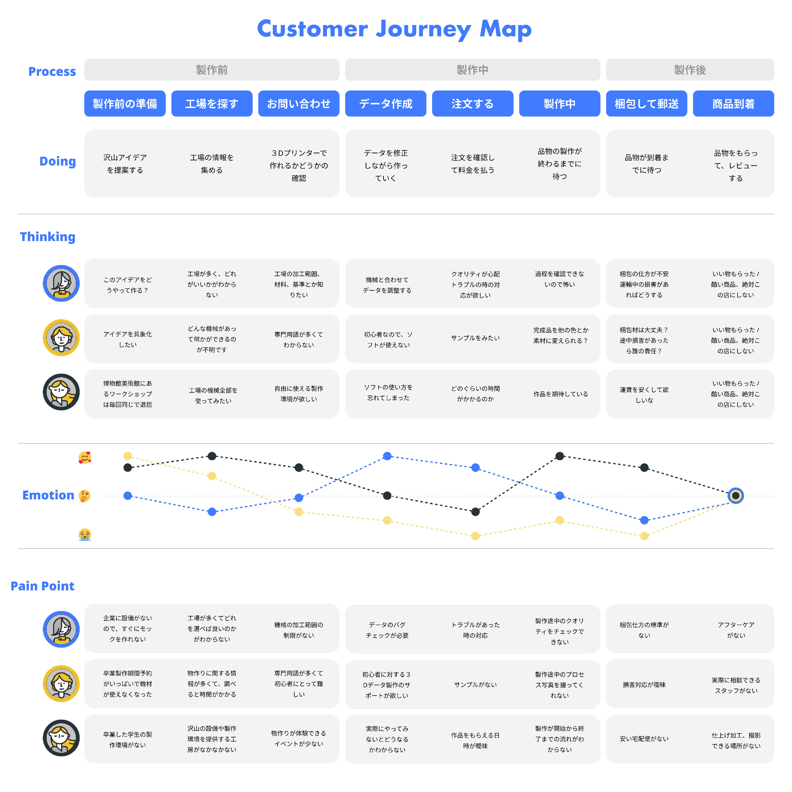

ShareLab:信頼関係に基づき、製作をサポートするサービスデザインの研究
ShareLab: Research on service design to support production based on trust relationships

蔡 寧
CAI Ning
”メイカーズムーブメント”とは誰でもクリエーターとして、デジタル技術を用いたモノづくりの潮流のことである。従来の大きなメーカーに大量生産と違い、個人のアイデアとデザイン能力を高め、社会に対しては工業生産の際に起きる資源の無駄を軽減することができるものである。
この様な現代の製造業では複雑な加工技術と技法が使われている。例えば３Dプリント、レーザーカッターなどの加工技術については様々な種類があり、ある程度、専門知識がないと理解出来ない複雑な領域である。この研究は３Dプリントなどの物作りに関する技術を使い、製作にサポートする「ShareLab」というサービスを展開した。
「Share Lab」は言語や専門知識の壁を乗り越え、日本のカスタマーと中国の工場をマッチングすることで個人や中小企業の制作をサポートするサービスデザインである。すなわち、日本の制作したいカスタマーはこのプラットフォームを通して中国の工場の情報を得ることができる一方で、中国の工場は海外進出ができるサービスである。
本研究では主に日本の物作りと関わるカスタマーに向けたサービスのデザイン事例とプロセスを明らかにしたものである。具体的には物作りの予約システム（AppとWebデザイン）のデザインとワークショップ体験に基づくユーザーインターフェースとユーザーエクスピリエンスの設計プロセスを明示した。